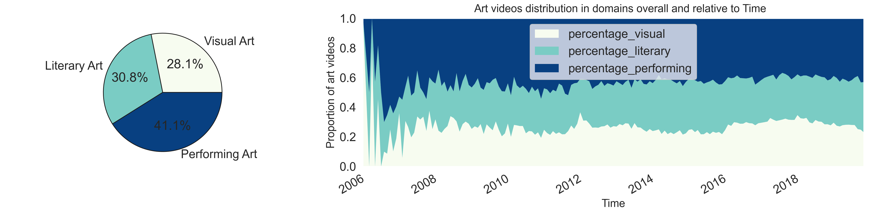
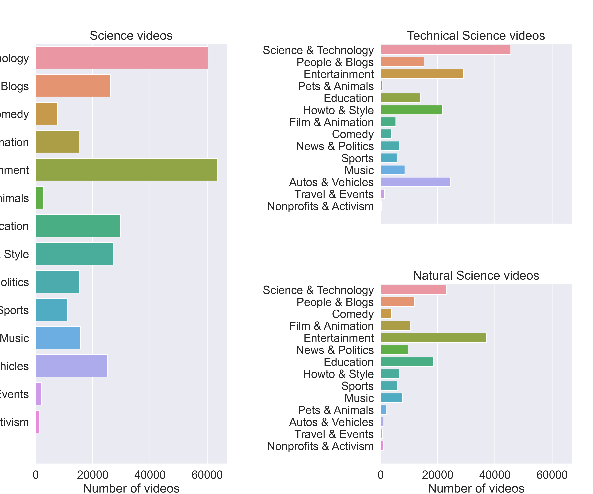
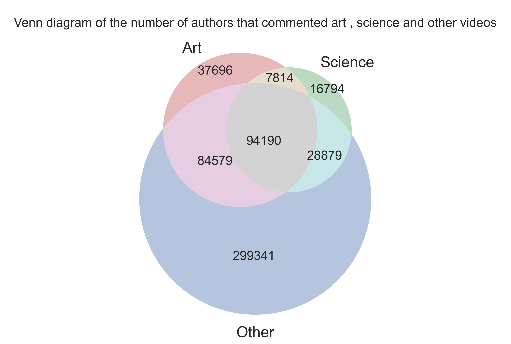
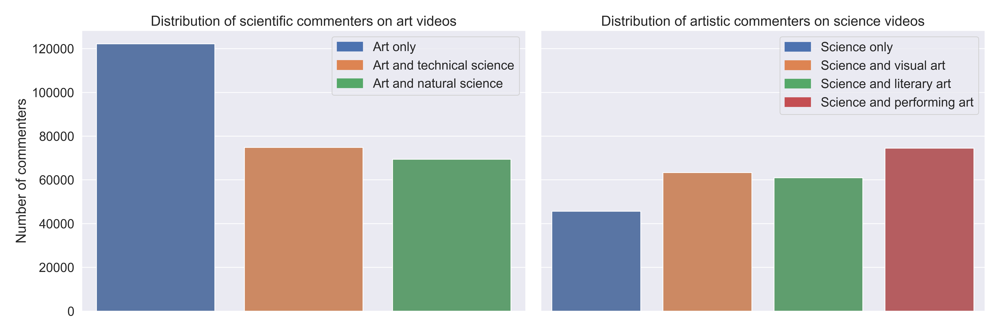
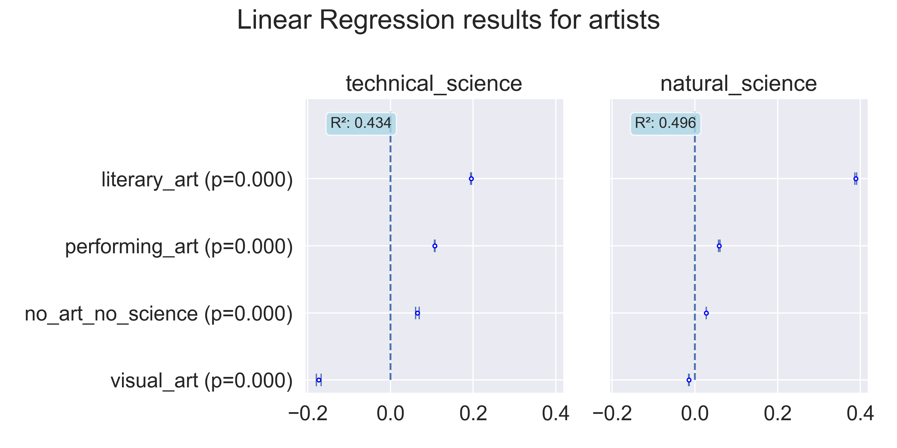

We are often put into boxes regarding our interests and hobbies, we have friends with the same
interests as us, we chose a department when we are young at high school and social media makes a lot
of suggestions based on our past interests. We sometimes hear that artistic and scientific people
are different, closed-minded in their subject, and not interested in the other one. As an example,
there exists a popular myth according to which "left-brained" people are more logical whereas
"right-brained" people are more creative.
The goal of this project is to study this stereotype by studying the YouNiverse dataset at our
disposition using comments and video metadata files. We want to determine whether users who usually
comment on artistic videos also comment on scientific videos (and vice-versa). Our goal is also to
split artistic and scientific videos into smaller domains to analyze if this effect is influenced by
the particular domain of science/art in which the user is interested. To draw some conclusions about
people's interests, we can determine the user profiles and the watching/commenting behaviors w.r.t.
videos that do not usually match their profiles.
Why should we care?
During our lives, we have experienced or noticed how people can be judged and put into separate
baskets when it comes to science and art. With this analysis, we want to be a part of breaking the
stigma about people from two different areas of thinking and the fact that they can be connected.
Research questions
- How do we define art in YouTube?
- What type of art (visual, literary, performing) and sciences (technical, theoretical) are the
most popular?
- Are commenters interested only in one area or are they engaged in both artistic and scientific
videos?
- Is there a difference of cross-interest between science and art when we study domains of these
fields?
- What is the difference in terms of artistic sensibility between people interested in
TS vs people interested in NS?
Data sampling
We are working with the YouNiverse dataset which is
quite big (~111 GB). We want to classify videos into different domains for our analysis so we will
need the metadata of the videos (13.5 GB file). And since we want to observe user commenting habits,
we will need to address the dinosaur in the room: the 77.2 GB comments file as well.
Such great quantities of data can simply not be put into memory at once so we had to come up with a
way of sampling that would allow us to simultaneously having a large enough sample and be able to
match efficiently the user to the videos on which they commented.
Since we are studying youtube users, we choose to start the data sampling from them. What we do is
recover a fixed number of comments, let's say around 12 million. In practice, we see that it
corresponds to 619701 users.
Then we carry on to the videos where these users commented, and filter them from the whole video
dataset. We assume that with enough users, we will have a large enough sample of videos to be
representative of all the videos.
Our final sample is then composed of:
| Number of comments |
Number of users |
Number of videos |
| 11999998 |
619701 |
4136765 |
Note: We only ran this sampling pipeline once since it is quite long. It was made possible to
process the whole video dataset with the help of dividing the data into processable chunks. We then
saved the sampled data into two light-weight files using the feather format.
Data filtering
Artistic videos
Whenever someone publishes a video on Youtube, they must be assign it to one of the fifteen
categories Youtube has predefined, namely:
- Autos & Vehicles
- Comedy
- Education
- Entertainment
- Film & Animation
- Gaming
- Howto & Style
- Music
- News & Politics
- Nonprofits & Activism
- Pets & Animals
- People & Blogs
- Science & Technology
- Sports
- Travel & Events
While the YouNiverse dataset does provide us with the category associated with each of the videos.
Unfortunately for us, this categorization has many flaws which means we can not use it effectively
whatsoever.
Sometimes videos have been randomly categorized by the publisher or another problem that can occur is
that a video could fit into multiple categories but since there is only one slot possible, a choice
must be made. There is no such thing as an “Arts” category either which means they will be spread
out in the other categories. For the “Science” videos of our analysis, one could naively use the
existing Science & Technology Youtube category, but this is not smart because as mentioned
previously, scientific videos can technically be both scientific and educative for example which
means they are also spread out.
Therefore we must filter out these artistic and scientific videos ourselves. In fact we only made use
of the Youtube categorization only for a single aspect: Gaming videos is the dominating category in
terms of number of videos but also caused us quite the problems for the filtering of our videos as
we made use of tags. The issue is that since video games can be about pretty much any thematic, the
tags can be so diverse and therefore include words one would not normally associate with video
games, e.g. "craft" but would make it so that a lot of Minecraft videos would be classified as
artistic which is not something we really want.
The YouNiverse dataset also contains the title, description and tags that were used in every video.
These elements have more potential to be informative compared to the category. The filtering made
use of the tags only since their goal is to be short and relevant to the content of the video while
the title and description can be more ambiguous and vague. The filtering is made using keyword
matching with a dictionary of words pertinent to wanted thematic. If one word is present in the
tags, then the video and its content is considered as part of that particular theme.
For each of the artistic and scientific domains which are used in the analysis, a hand-crafted
dictionary was created using the following approach:
- For a given domain, when thinking about it, a group of obvious words should come straight to
mind, these will serve as the core set upon which the dictionary will be built.
- The dictionary can be augmented by using the core words as search queries in websites that
provide either related terms or synonyms and hand-picking results that are relevant to the
theme.
- GPT3 and ChatGPT were used to generate even more diverse sets of words relevant to the core
words from which can be hand-picked from.
- Since exact keyword matching is being used, the words in the dictionary must be augmented, as in
adding also the plural form or any other derivatives of it if they make sense, e.g. for
choreographer, possible additions would be choreographies, choreographer, choreographers and so
on.
Some keywords that could be obvious had to be excluded e.g. music in arts since a lot of people
listen to music videos on YouTube without being interested in art.
Artistic videos
Defining art is not an easy task, it is a subjective concept and it constantly evolves with time. The
boundaries of what is considered art are constantly being challenged and redefined as it can present
itself under many shapes and forms. For the analysis, we settled on dividing arts into the following
domains (inspired by the Wikipedia Arts page):
- Visual Art [VA] (e.g. drawing, painting, photography, sculpting)
- Literary Art [LA] (e.g. fiction, drama, poetry, and prose)
- Performing Art [PA] (e.g. dance, music, and theater)
Scientific videos
Similarly, science was also separated into two domains.
- The first would be Natural Sciences [NS] where the focus is on understanding the natural world
and how it functions, e.g. biology, physics, chemistry.
- The second would be Technical Sciences [TS], disciplines that focus on the practical application
of scientific knowledge and principles, e.g. engineering, computer science.
This distinction was made so that it can be possible to study if within scientific-minded people,
there are subgroups that are more sensible to arts and whether it is related to their fields of
interest in science.
Exploratory Data Analysis
General EDA on all videos
Exploratory Data Analysis (EDA) is an essential step in any data science project. It allows us to
understand the characteristics and patterns of our data, identify any potential issues or biases,
and formulate hypotheses for further analysis. By carefully examining the data through
visualizations and summary statistics, we can gain insights that inform our decision-making and help
us to effectively communicate our findings to others.
This first graph shows that the majority of YouTube videos fall into the entertainment category. This
is not surprising, as entertainment is a broad category that includes a wide range of content such
as music, movies, television shows, and more. It is likely that these types of videos are highly
popular on YouTube, as they are easily consumable and can appeal to a wide audience. However, it is
important to note that this graph only represents the youtube category field of the videos, and may
not be representative of the overall distribution of video categories on YouTube. That's why we
decided to create our own category feature.
The following graph showing the proportion of science, art, and other types of videos over time
indicates that art and science categories make up a significant portion of the data, with a combined
total of 27%. This suggests that there is a sufficient amount of data to conduct an analysis on the
relationship between commenting behavior on scientific and artistic videos. The graph also shows
that there are slightly more artistic videos than scientific videos, and that the proportions of
these categories do not fluctuate significantly over time. This suggests that the distribution of
these categories is relatively stable and consistent, which may be useful for analyzing trends or
patterns in the data.

The Venn diagram showing the overlap between artistic and scientific videos indicates that a
significant portion of the videos in the dataset belongs to both categories. We decided to keep
these videos in the dataset, as they accurately reflect the complexity and multifaceted nature of
many YouTube videos.
Artistic videos
Since we have identified which videos fall under our vision of "Artistic videos", let's look at their
distribution within the categories that Youtube has defined:
Most popular dictionary words that classified videos in their domains give us more information about
what most popular type of video is actually located in each domain.
After examining the most common words in each of the subcategories, we found that some words were not
specific enough to accurately classify the videos. For example, the word "music" could refer to a
wide range of content, including both artistic and non-artistic videos. As a result, we decided to
remove or replace these types of words from our dictionaries in order to increase the precision of
our categorization process. Additionally, we noticed that some words were frequently used due to the
presence of a large number of gaming videos in the dataset. For example, the word "craft" was
commonly used in the titles and descriptions of Minecraft videos. In order to remove any potential
biases introduced by these types of videos, we decided to remove gaming videos from the dataset.

The pie chart shows that the proportion of LA, VA, and PA videos in the
YouTube dataset is roughly equal and does not vary significantly over time. This indicates that the
YouTube platform has a diverse range of artistic content, with a roughly equal distribution of
different types of artistic expression. This is an interesting finding, as it suggests that users of
the platform are interested in a wide range of artistic content, rather than just focusing on a
single type of art.

In the Venn diagram representing the intersection between videos classified as LA, visual
art, and PA, it is evident that there is a small portion of videos that fall into two
subcategories. This is useful for the statistical analysis that will follow the EDA, as it allows
for clear conclusions to be drawn about the characteristics of each subcategory. The small overlap
between the subcategories means that the majority of the videos can be confidently classified into
one specific subcategory, which will enable more accurate and reliable results in the statistical
analysis.
Scientific videos
Similarly, we can look at the distribution within the Youtube categories for our "Science videos".

We can also analyse the most used words in the tags to classify our science videos. These can give us
a more accurate impression of what tags our videos actually point towards.
For example, we can see that NS videos are quite focused on astronomy and theoretical
physics (universe, galaxy, stars). We also see a part in biology with words like (medical, cell,
DNA). As a comparison, TS is more focused on engineering and, well, technology in
general.
We also wanted to observe the repartition of our classified science videos in the two different
categories. We can see this in the following plot.
The pie chart shows us the distribution of the videos in general while the graph on the left shows us
the evolution of the percentages with regard to the years. We can observe that we see in general a
little more TS videos on YouTube than NS videos. While the proportion is
almost equal, we could explain the larger amount of tech videos on youtube because of all the tech
tutorials, technological product reviews and tests that is a quite popular trend on YouTube (source).
The quite important variations we see in the years before 2008 can be explained by the fact that
there is fewer videos and so the graph is less smooth.
Here again, while there is still some overlap, the majority of the videos can be confidently
classified into one specific subcategory, which will enable more accurate and reliable results in
the statistical analysis.
Investigating our research questions
Users classification pipeline
The "User Classification Pipeline" is the next step after completing the EDA phase. The goal of this
pipeline is to classify users based on their comments on artistic and scientific videos, using the
same categories and subcategories that are defined in the EDA phase.
To achieve this, a sample of 12 million comments from the "youtube_comments.tsv" file was taken and
grouped by user. The data was then merged with the previous video dataframe to obtain the number of
comments each user made on artistic, scientific, and other types of videos.
This process allows us to create a clean dataframe that can be used for the statistical analysis to
answer our research question. Indeed, it enables us to accurately analyze the behavior of users in
relation to different types of artistic and scientific content, as we are able to classify the
artistic and scientific videos into the subcategories of LA, VA, PA, NS and TS.
Users analysis
EDA
The first graph reveals that a large proportion of authors who comment on artistic videos also
comment on scientific videos (and vice versa). To verify that this is not due to the fact that many
videos are classified as both artistic and scientific, we can compare this Venn diagram to the Venn
diagram of the number of artistic and scientific videos. We find that the proportion of videos
classified as both scientific and artistic is much lower than the proportion of authors who comment
on both artistic and scientific videos. This suggests that the authors' dual interest in both art
and science may be driving this behavior, but further analysis is needed to confirm this.

To further explore the interests of authors who comment on artistic and scientific videos, we
compared the percentage of authors who commented on these types of videos with respect to their
other interests. Our analysis revealed that 36.19% of all authors commented on artistic videos,
while 45.48% of authors who commented on scientific videos also commented on artistic videos.
Similarly, 23.83% of all authors commented on scientific videos, while 69.07% of authors who
commented on artistic videos also commented on scientific videos. These results are consistent with
our previous analysis using the Venn diagram and suggest that our initial stereotype may be
incorrect.

Now that we have identified a significant overlap in the interests of authors who comment on both
artistic and scientific videos, it is important to gain a better understanding of the specific types
of scientists and artists who are interested in each other's content. To do this, we analyzed the
distribution of scientific commenters on artistic videos by their type of science, as well as the
distribution of artistic commenters on scientific videos by their type of art. Our analysis revealed
that natural scientists tend to comment more on artistic videos than technical scientists, while
performing artists tend to comment more on scientific videos than visual and literary artists. These
findings provide valuable insights into the specific types of scientists and artists who are
interested in each other's content.
Visualizations
Network graphs can be a very helpful tool to visualize how the commenters cluster up with other users
who share similar commenting behaviors. To achieve this, a bipartite graph can be created where the
first group of nodes are the commenters and the second group of nodes are the various domains used
for the analysis. Each node from the first group has edges to a node in the second group if they
have commented on a video that was classified as part of that domain. Then using a projection on the
first group, a point cloud like network graph can be obtained which clusters the commenters.
For this first graph, the focus is about how users from the random sample comment on the video types
(artistic, scientific, others). Without surprise, one can notice that the large majority of users
comment only on videos which have probably nothing to do with arts or science. It can be seen that
the amount of users that comment only on artistic videos and users that comment on both artistic and
other videos is rather similar. Interestingly, users that comment solely on artistic and scientific
videos are a very small minority.
In this second graph, the focus is now put on users and their commenting habits for the various
chosen domains within arts and science.
For users that solely comment on one domain, it can be noticed that within science, users linked to
NS and those linked to TS are similar in proportions. On the other hand, for artistic videos, one
can see that PA clearly dominates VA and LA.
When looking at the central mass, it can be noticed that a certain cluster is quite separated, it's
the group of users that comment only on PA and other videos. For the interactions between arts and
science, it can be seen that on one hand, users that comment on NS seem to enjoy equally all art
domains while on the other hand, users that comment on TS rarely ever tend to comment on PA.
Regression analysis
Now that we have an idea of how our user sample looks like, we will try to answer our research
question:
"What is the difference in terms of artistic sensibility between people interested in
technical-related science vs people interested in NS?"
More precisely:
We will try to use linear regression in order to answer these two questions
- Who is more probable to comment on a VA / LA / PA video: technical
scientists or natural scientists?
- Who is more probable to comment on a TS / NS video: visual artists,
performing artists or literary artists?
Let's define these two sets so we can use them in our linear regression models.
Arts
$$A = \{A_1, A_2, A_3\} = \{\text{visual}, \text{literary}, \text{performing}\}, \quad A_i \in
\mathbb{N}$$
Sciences
$$S = \{S_1, S_2\} = \{\text{technical}, \text{natural}\}, \quad S_i \in \mathbb{N}$$
Each corresponds to the number of comments a user makes on videos from different domains.
To also compare the coefficients we will get with videos not labeled with art nor science, we need to
add this type of comments in the model as well.
We'll denote them as $$Q \coloneqq \text{number of comments on non-art and non-science videos}$$
Are scientists interested in art videos?
Let's start with the first question with the following models for artists:
$$ A_j = \beta_0 + \sum_{i=1}^2 \beta_i S_i + \beta_3 Q, \quad j=1,\dots,3$$
We can see here that in general people interested in NS are more likely to comment on
art videos than people interested in TS, and this for our three art domains. We can
also see that people interested in TS videos are quite unlikely to comment on
visual_art videos.
We can also see that no_art_no_science is quite close to 0 in all cases, this helps us assess the
significance of the other coefficients for NS and TS.
Let's examine this phenomenon the other way around.
Are artists interested in science videos?
For the second question, we define the following models for scientists:
$$ S_j = \beta_0 + \sum_{i=1}^3 \beta_i A_i + \beta_4 Q, \quad j=1,\dots,2$$

Here we can see in what domain of science are artists more interested in. We see that in general,
people interested in LA are more likely to watch science videos than other types of arts.
Furthermore, as in the previous plot, we can see that people interested in LA are also
much more interested in NS rather than TS.
We also see that people interested in VA are quite unlikely to comment on TS
videos.
Statistical analysis
Looking at both relationship directions, we have to run statistical tests to see if there is a
significant difference.
T-test
Are artistic people interested in science videos?
The p-value of 1.7e-155 is less than the significance level of 0.05, so we can reject the null
hypothesis. It means that there is a significant difference between the number of comments that
authors who comment on art videos write on science videos and the average number of comments that
all authors write on science videos.
Are scientific people interested in art videos?
The p-value of 5.6e-232 is less than the significance level of 0.05, so we can reject the null
hypothesis.
Hence, for both cases we are rejecting the null hypothesis. We ran other statistical tests as t-test
might not be the most robust option.
Wilcoxon test
Wilcoxon test is a non-parametric statistical test which does not assume normality.
Are artistic people interested in science videos?
The p-value of 0.0 is less than the significance level of 0.05, so we can reject the null hypothesis.
Are scientific people interested in art videos?
The p-value of 0.004 is less than the significance level of 0.05, so we can reject the null
hypothesis.
Welch's t-test
Welch's t-test is more robust than the usual t-test.
Are artistic people interested in science videos?
The p-value of 7.8e-135 is less than the significance level of 0.05, so we can reject the null
hypothesis.
Are scientific people interested in art videos?
The p-value of 1.8e-217 is less than the significance level of 0.05, so we can reject the null
hypothesis.
Mann-Whitney U test
With Mann-Whitney U test for both cases we gor p-value=0, hence the null hypothesis can also be
rejected which corresponds to all other tests.
Final thoughts and conclusion
...
In statistical analysis, we rejected null hypothesis as p-values were lower than 0.05, meaning that
there is a significant difference between the number of comments from "artistic" commenters on
science videos and the average number of comments that all authors write on science videos and the
same goes to "scientific" commenters and art videos.
Using this analysis, we are able to see that people are interested in different fields.
We hope that with this analysis we were able to prove that people can be interested both in science
and art.